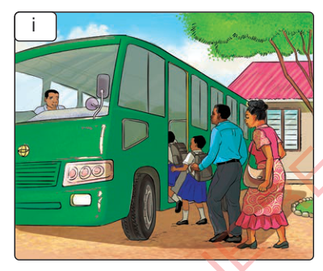
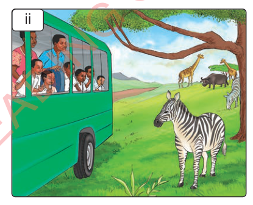
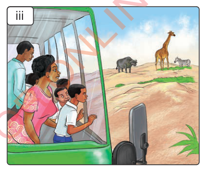
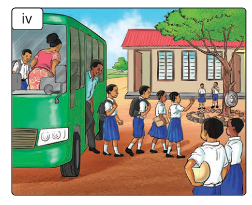

Zoezi la 7: Utungaji
Tumia lugha ya alama kuelezea kuhusu mbuga yoyote ya wanyama kwa kufuata mtiririko wa picha zifuatazo, kisha uandike hadithi fupi.
i

ii

iii

iv

Tumia lugha ya alama kuelezea kuhusu mbuga yoyote ya wanyama kwa kufuata mtiririko wa picha zifuatazo, kisha uandike hadithi fupi.



